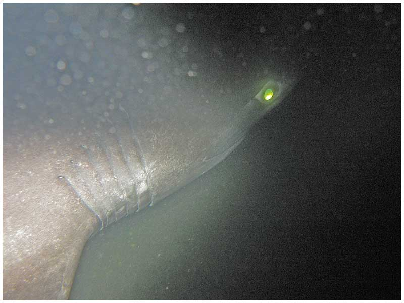

Bluntnose Sixgill Shark
The bluntnose sixgill shark (Hexanchus griseus), often simply called the cow shark, is the largest hexanchoid shark, growing to 26 ft (7.9 m) in length. It is found in tropical and temperate waters worldwide and its diet is widely varied by region.
Taxonomy
The first scientific description of the bluntnose sixgill shark was authored in 1788 by Pierre Joseph Bonnaterre. As a member of the Hexanchidae family, it has more close relatives in the fossil record than living relatives. The related living species include the dogfish, the Greenland shark, and other six- and sevengilled sharks. Some of the shark's relatives date back 200 million years. This shark is a notable species due to both its primitive and current physical characteristics.
Description
The bluntnose sixgill shark has a large body and long tail. The snout is blunt and wide, and its eyes are small. There are 6 rows of saw-like teeth on its lower jaw and smaller teeth on its upper jaw. Skin color ranges from tan, through brown, to black. It has a light-colored lateral line down the sides and on the fins' edges, and darker colored spots on the sides. Its pupils are black and its eye color is a fluorescent blue-green. The bluntnose sixgill shark can grow to 8 m (26 ft). Adult males generally average between 3.1 and 3.3 m (10 and 11 ft), while adult females average between 3.5 and 4.2 m (11 and 14 ft).
The bluntnose sixgill shark resembles many of the fossil sharks from the Triassic period. A greater number of Hexanchus relatives occur in the fossil record than are alive today. They have one dorsal fin located near the caudal fin. The pectoral fins are broad, with rounded edges. The six gill slits give the shark its name. Most common sharks today only have five gill slits.
Distribution and Habitat

With a global distribution in tropical and temperate waters, the bluntnose sixgill shark is found in a latitudinal range between 65°N and 48°S in the Atlantic, Indian, and Pacific oceans. It has been seen off the coasts of North and South America from North Carolina to Argentina and Alaska to Chile. In the eastern Atlantic, it has been caught from Iceland to Namibia, in the Indo-Pacific it has been caught from Madagascar north to Japan and east to Hawaii and in the Mediterranean it has been caught in Greece. It typically swims near the ocean floor or in the water column over the continental shelf in poorly lit waters. It is usually found 180–1,100 m (590–3,610 ft) from the surface, inhabiting the outer continental shelf, but its depth range can extend from 0–2,500 m (0–8,202 ft). Juveniles will swim near the shoreline in search of food, sometimes in water as shallow as 12 m (39 ft), but adults typically stay at depths greater than 100 m (330 ft). It can be seen near the ocean's surface only at night.
An adult bluntnose sixgill shark was recently seen at a depth of 259 m (854.7 ft) in the Philippines. On December 2, 2017, the ROV camera of Paul Allen's research vessel RV Petrel captured video footage of the shark lurking around a WWII shipwreck in Ormoc Bay. This was the first time the species was photographed in Philippine waters. In 2018, a sixgill shark was filmed near the Saint Peter and Saint Paul Archipelago, midway between Brazil and Africa, at a depth of around 400 feet.
Biology and Ecology
Although sluggish in nature, the bluntnose sixgill shark is capable of attaining high speeds for chasing and catching its prey using its powerful tail. Because of its broad range, it has a wide variety of prey, including fish, rays, chimaeras, squid, crabs, shrimps, seals, and other sharks. Despite its massive size, it is harmless to humans unless provoked. In 2013, during filming for the Shark Week episode "Alien Sharks", bluntnose sixgill sharks were found to be territorial as one was filmed laying claim to the carcass of a sperm whale calf that was being used to lure deep-sea shark species within range of submarine cameras. The shark was recognized as being the same individual by the scars on its back and sides, and the bites it removed from the carcass allowed other animals, such as hagfish, to feed and further break down the dead whale.
Reproduction is ovoviviparous with embryos receiving nourishment from a yolk sac while remaining inside the mother. Litters are large and typically have 22-108 pups measuring 60–75 cm (24–30 in) at birth, and the largest recorded pup is 482 centimetres (190 in). New pups are also born with a lighter belly color than adults. This form of cryptic coloration or camouflage is used to disguise the pup's appearance. A high mortality rate of the young pups is presumed, owing to the large litter size. The gestation period is unknown, but is probably more than two years. Females reach sexual maturity at 4.5 m (15 ft) in length and 18–35 years in age, while males reach sexual maturity much earlier at 3.15 m (10.3 ft) in size and 11–14 years in age. Many biologists believe that the male bluntnose sixgill shark's teeth are specially adapted for courtship. The male nips at the female's gill slits using its longer-cusped teeth. This action is thought to entice the female into mating. Evidence of this hypothesis is that female bluntnose sixgill sharks show up with seasonal scars around their gill slits, which apparently is from breeding with males. Males and females are thought to meet seasonally between May and November.
Human Interaction
The bluntnose sixgill shark is listed as Near Threatened by the International Union for the Conservation of Nature (IUCN) because, despite its extensive range, its longevity and popularity as a sport fish makes it vulnerable to exploitation and unable to sustain targeted fishing for very long. Although population data is lacking in many areas for this species, certain regional populations have been classified as severely depleted. Although it is usually caught as bycatch, it is also caught for food and sport.